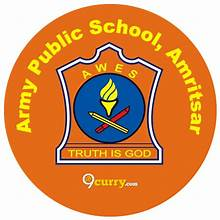

Army School Kandrori was bifurcated from Little Angle’s School Kandrori and was inaugurated as an independent Army School on 11 April 1994 and now enjoying the status of Army Public School from the year 2010
The school started with a strength of approximately 500 students and now it is a big family which includes 1100 plus students nearly 46 teachers, 04 Non-teaching and 13 Adm staff